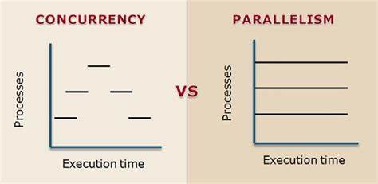
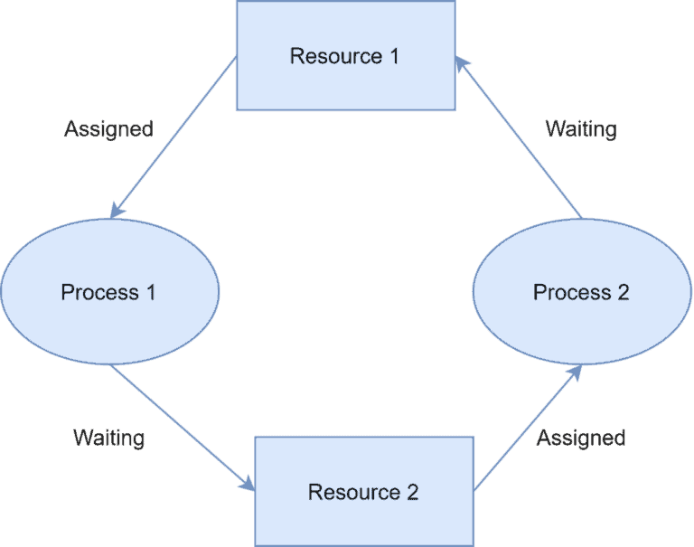
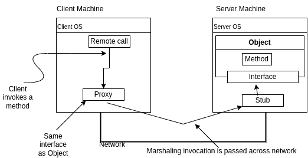
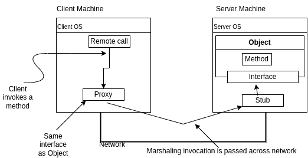

Theory
Table of Contents
- Theory
1. Introduction
1.1 Define
Multiple computers
Common Task
Client sees a single service
1.2 Why not DS?
Fault Tolerance is Hard ( a system as a whole continues to work, even when some parts are faulty)
- Non reliable communication
- Processes might crash
- Coordinated and uncoordinated indeterministic failures
1.3 Why DS?
Parallel or Concurrent
Fault Tolerance
Physical Requirements
Isolation (Security)
Scalability
Resource Sharing
Price / Performance Ratio
Seamless Communication
Abstraction of Computation
2. Concurrency and Parallel Processing

| Single Core | Multi Core | |
|---|---|---|
| Concurrent | ✅ | ✅ |
| Parallel | ❎ | ✅ |
2.1 Thread, Process and Fork
- Threads (of the same process) run in a shared memory space
- Processes run in separate memory spaces.
- Each process is started with a single thread, often called the primary thread, but can create additional threads from any of its threads.
- A thread is a subset of the process.
- A fork gives a copy of a process
- A fork has its own memory space (not shared)
2.2 Channels and Pipes
- Pipes are channels that connect processes for communication.
- They have a write end for sending bytes and a read end for receiving these bytes in FIFO
- Channels act like pipes between two processes or threads.
- One process puts data into the channel, and the other process retrieves it.
- Channels can be used for communication between concurrent threads within the same process
- They are simpler to use than pipes because they don’t involve file descriptors or system calls.
- Pipes are typically unidirectional. Data flows from the write end to the read end. To achieve full duplex communication (both directions simultaneously), you’d need two pipes—one for each direction.
- Channels can be bidirectional, allowing data to flow in both directions. Channels can handle simultaneous communication in both directions within the same channel.

2.3 Locks
- A Lock can only give access to a single thread
- A mutually exclusive lock can give access to multiple threads
2.3.1 Example
Binary Lock
// Binary Lock
#include <stdio.h>
#include <pthread.h>
pthread_mutex_t lock;
void* critical_section(void* arg) {
int thread_id = *((int*)arg);
pthread_mutex_lock(&lock); // Acquire the binary lock
printf("Thread %d: Entered critical section\n", thread_id);
// Critical section code
pthread_mutex_unlock(&lock); // Release the binary lock
free(arg);
return NULL;
}
int main() {
pthread_t threads[5];
int* thread_ids[5];
pthread_mutex_init(&lock, NULL); // Initialize the binary lock
// Create and start 5 threads
for (int i = 0; i < 5; i++) {
thread_ids[i] = malloc(sizeof(int));
*thread_ids[i] = i;
pthread_create(&threads[i], NULL, critical_section, thread_ids[i]);
}
// Wait for all threads to finish
for (int i = 0; i < 5; i++) {
pthread_join(threads[i], NULL);
}
pthread_mutex_destroy(&lock); // Destroy the binary lock
return 0;
}
Shared/Exclusive Lock
// Shared/Exclusive Lock
#include <stdio.h>
#include <pthread.h>
pthread_rwlock_t rwlock;
void* read_shared(void* arg) {
pthread_rwlock_rdlock(&rwlock); // Acquire a shared read lock
printf("Thread %ld: Reading shared resource\n", pthread_self());
// Read from shared resource
pthread_rwlock_unlock(&rwlock); // Release the shared read lock
return NULL;
}
void* write_exclusive(void* arg) {
pthread_rwlock_wrlock(&rwlock); // Acquire an exclusive write lock
printf("Thread %ld: Writing to shared resource\n", pthread_self());
// Write to shared resource
pthread_rwlock_unlock(&rwlock); // Release the exclusive write lock
return NULL;
}
int main() {
pthread_t threads[5];
pthread_rwlock_init(&rwlock, NULL); // Initialize the shared-exclusive lock
// Create threads for shared read access
pthread_create(&threads[0], NULL, read_shared, NULL);
pthread_create(&threads[1], NULL, read_shared, NULL);
pthread_create(&threads[2], NULL, read_shared, NULL);
// Create threads for exclusive write access
pthread_create(&threads[3], NULL, write_exclusive, NULL);
pthread_create(&threads[4], NULL, write_exclusive, NULL);
// Wait for all threads to finish
for (int i = 0; i < 5; i++) {
pthread_join(threads[i], NULL);
}
pthread_rwlock_destroy(&rwlock); // Destroy the shared-exclusive lock
return 0;
}
2.4 Deadlocks, Livelocks and Starvation
A deadlock is a state in which each member of a group of actions, is waiting for some other member to release a lock.
A livelock is similar to a deadlock, except that the states of the processes involved in the livelock constantly change with regard to one another, none progressing.



2.5 Race Conditions
A race condition occurs when two or more threads can access shared data and attempt to change it simultaneously.
Can prevent using locks to ensure only one thread accesses the shared data at a time.
e.g.: Lower value than Expected (MapReduce)
2.6 Blind Writes
Blind writes occur when threads write to shared memory without proper synchronization.
Threads may overwrite each other’s changes, leading to incorrect results.
The final value of shared variable depends on which thread executes last.
Can prevent using properly syncing all threads.
e.g.: Higher value than Expected (MapReduce)
3. Communication and RPC
3.1 Latency and Bandwidth
- Latency: Time until message arrives
- Bandwidth: Data volume per unit time
3.2 Remote Procedure Calls (RPC)
| Layer | Name | Protocols |
|---|---|---|
| Layer 7 | Application | SMTP, HTTP, FTP, POP3, SNMP |
| Layer 6 | Presentation | MPEG, ASCH, SSL, TLS |
| Layer 5 | Session | NetBIOS, SAP |
| Layer 4 | Transport | TCP, UDP |
| Layer 3 | Network | IPV5, IPV6, ICMP, IPSEC, ARP, MPLS. |
| Layer 2 | Data Link | RAPA, PPP, Frame Relay, ATM, Fiber Cable, etc. |
| Layer 1 | Physical | RS232, 100BaseTX, ISDN, 11. |
A communication protocol that enables a program to execute a subroutine or procedure on a remote system over a network.
3.2.1 Example
In this example, we have a Calculator type that represents a calculator instance. It has a single method Add that takes two integers and returns their sum.
In the main function, we create a new instance of Calculator, register it with the RPC server using rpc.Register(calculator), and start the RPC server on port 8000.
// server.go
package main
import (
"fmt"
"net"
"net/rpc"
)
type Calculator int
func (c *Calculator) Add(x, y int) (int, error) {
return int(*c) + x + y, nil
}
func main() {
calculator := new(Calculator)
rpc.Register(calculator)
listener, err := net.Listen("tcp", ":8000")
if err != nil {
fmt.Println("Failed to listen:", err)
return
}
defer listener.Close()
fmt.Println("Listening on port 8000...")
rpc.Accept(listener)
}
In the client code, we create a new client connection to the RPC server using rpc.Dial("tcp", "localhost:8000").
We then call the Add method on the remote server using client.Call("Calculator.Add", []int{3, 5}, &result). The first argument is the name of the remote method, the second argument is the input arguments (an array of integers in this case), and the third argument is a pointer to a variable where the result will be stored.
package main
import (
"fmt"
"net/rpc"
)
func main() {
client, err := rpc.Dial("tcp", "localhost:8000")
if err != nil {
fmt.Println("Failed to connect:", err)
return
}
defer client.Close()
var result int
err = client.Call("Calculator.Add", []int{3, 5}, &result)
if err != nil {
fmt.Println("Failed to call Add:", err)
} else {
fmt.Printf("3 + 5 = %d\n", result)
}
}
Output
(Server terminal)
Listening on port 8000...
(Client terminal)
3 + 5 = 8
3.2.2 Invoking RPC
| Protocol | Description |
|---|---|
| TCP (Transmission Control Protocol) | reliable, connection-oriented, guarantees the delivery of data packets in the correct order, provides error-checking mechanisms. |
| HTTP (Hypertext Transfer Protocol) | widely used protocol, useful when the client and server are separated by firewalls or proxy servers, often used in web services and RESTful APIs. |
| gRPC (Google Remote Procedure Call) | high-performance, uses HTTP/2, multiplexing, header compression, bidirectional streaming. efficient, scalable, and language-agnostic. |
| WebSocket | persistent, bidirectional communication channel between a client and a server over a single TCP connection, allowing real-time data exchange without the overhead of traditional HTTP requests. |
3.2.3 Serialization and Marshalling
 

Serialization is persisting an object into a state independent of its execution environment. During serialization, the data is saved (in memory or physically) in a raw format, such as byte arrays or binary data. Deserialization is the reconstruction of the original object from the serialized data.
Marshaling is moving an object or method call into another execution part. It is more about the interoperability of objects between programs or threads. It can also involve serialization during its operation. Therefore, serialization is usually part of marshaling.


3.2.4 Protocol Buffer
message PaymentRequest{
message Card{
required string cardNumber = 1;
optional int32 expiryMonth = 2;
optional int32 expiryYear = 3;
optional int32 CVC = 4;
}
}
message PaymentStatus{
required bool success = 1;
optional string errorMessage = 2;
}
service PaymentService{
rpc ProcessPayment(PaymentRequest) return (PaymentStatus) {}
}
4. Models
4.1 Two Generals Problem


TCP is reliable, but doesn't solve two generals problem.


4.2 Byzantine Generals Problem

- Up to f generals might behave maliciously
- Honest generals don’t know who the malicious ones are
- The malicious generals may collude
- Nevertheless, honest generals must agree on plan
need 3f+1 generals in total to tolerate f malicious generals (<1/3 may be malicious)
4.3 Systems Models
- Network behavior ( messages may be loss)
- Node behavior (crashes / faults )
- Time behavior (latency)
4.4 Network Behaviour
- Reliable (perfect) links: Message is received if and only id it is sent
- Fair-loss links: Message may or be lost, duplicated, or reordered. if kept retrying message eventually gets through
- Arbitrary links: A malicious adversity may interfere with messages (eavesdrop, modify, drop, spoof, reply)
- Network partitioning : some links dropping/ delaying all messages for extended period of time
4.5 Node Behaviour
- Crash-Stop: A node is faulty if it crashes (at any time). After crashing, it stops execution (forever)
- Crash-Recovery: A node may crash at any moment, losing its in-memory (volatite) state. It may resume executing sometime later
- Byzantine (fail-arbitrary): A node is faulty if it deviates from the algorithm, Faulty nodes may do anything, including crashing or malicious
4.6 Time Behaviour
- Synchronous: Message latency no greater than a known upper bound. Nodes execute algorithm at a known speed
- Partially synchronous: System is asynchronous for some finite ( but, unknown) period of time, Synchronous otherwise
- Asynchronous: Messages can be delayed arbitrarily. Nodes can pause execution arbitrarily. No timing guaranties
4.7 Violations of Synchrony
Networks
- predictive latency
- Message loss requiring retry
- Congestion/ contention causing queueing
- Network/route reconfiguration
Nodes
- predictable speed
- Operating system scheduling issues (priority inversion)
- Stop-the-world garbed collection pause
- Page fault (trashing)
4.7.1 Congestion
- Congestion occurs when there is too much traffic on the network, and the available resources (like bandwidth or buffers) are not enough to handle it.
- It causes delays, packet loss, and reduced throughput (data transfer rate).
- Congestion can happen due to high traffic volumes, sudden traffic bursts, inefficient routing, or network failures.
4.7.2 Contention
- Contention happens when multiple devices or processes try to access or use the same shared resource at the same time.
- It leads to increased latency (delay) because entities have to wait for the resource to become available.
- Contention can also reduce overall throughput and cause unfairness, where some entities get more access than others.
4.7.3 Stop the World Garbage Collection
In programming, garbage collection is the process of automatically reclaiming memory occupied by objects or data structures that are no longer in use by the program. This helps prevent memory leaks and simplifies memory management for developers.
The "Stop-the-world" part of the phrase refers to the fact that, in some garbage collection implementations, the entire application or program execution is temporarily suspended or paused while the garbage collection process is happening. This means that all running threads or processes are stopped, and no code is executing during this period.
4.7.4 Page Fault and Thrashing
A page fault is an exception or interrupt that occurs when a program tries to access a memory page that is not currently in the computer's physical memory (RAM). When this happens, the operating system needs to bring the required page from disk into memory before the program can continue executing.
Thrashing is a situation that occurs when a computer spends most of its time handling page faults, instead of executing productive instructions. This happens when the system's physical memory is too small to hold the working set of active memory pages required by the running programs.
4.7.5 Priority Inversion
A scheduling problem that causes a high-priority task to be blocked or delayed by a lower-priority task.
In operating systems, priority inversion can happen due to various reasons, such as:
- Sharing of resources: If a low-priority task holds a resource (like a lock or a semaphore) that a high-priority task needs, the high-priority task may get blocked until the low-priority task releases the resource.
- Interrupts: If a low-priority task is interrupted by a higher-priority task, but then the higher-priority task gets blocked (e.g., waiting for I/O), the low-priority task may continue executing, delaying the higher-priority task.
- Scheduling algorithms: Some scheduling algorithms can cause priority inversion due to their design or implementation.
4.8 Availability
Availability – Uptime -> fraction of time that a service is functioning correctly
Two nines -> 99% (down 3.7 days /year)
Three nines -> 99.9% (down 8.8 hours /year)
Four nines -> 99.99% (down 53 minutes /year)
Five nines -> 99.999% (down 5.3 minutes /year)
4.9 Faliure Detection
For crash stop/ crash recovery : send message, wait response, label node as crashed if no reply within some timeout
Cannot tell the difference between crashed node, temporarily unresponsive node, lost messages, and delayed messages.
Perfect timeout-based failure detectors exists only in a synchronous crash-stop system with reliable links.
Eventually perfect failure detector
- May temporarily label a node as crashed even though it is correct
- May temporarily label a node as correct, even though it has crashed
- But, eventually, label a node as crashed if and only if it has crashed
5. Time
For software systems:
Time is represented as numerical values, like timestamps or durations.
Software uses time for scheduling tasks, tracking events, and measuring performance.
Time is typically obtained from hardware clocks or external time sources.
For Operating Systems:
Operating systems use time for scheduling processes and managing resources.
They have a system clock and timers to keep track of time.
Time is important for fair resource allocation and maintaining system stability.
For Distributed Systems:
In distributed systems, there is no single global notion of time across different machines.
They use techniques like logical clocks or time synchronization protocols to establish a consistent view of time.
Consistent time is crucial for coordinating operations and ensuring data consistency across different nodes.
5.1 Time for Distributed Systems
- Scheduler (also in operating systems) : For Scheduling, Timeouts, Failure Detectors, Retry time , etc..
- Performance measurement statistics, profiling : Time a process had been running, CPU usage, etc
- Log files & databases : Records when an event occurs
- Date with timelimited validity : cache entries DNS / TLS / etc